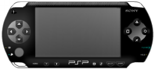

Perkenalan Singkat Tentang Sony Playstation Portable
PlayStation Portable (プレイステーション・ポータブル Pureisutēshon Pōtaburu, secara resmi disingkat PSP) adalah konsol permainan genggam yang dibuat dan dipasarkan oleh Sony. Pembuatan konsol ini pertama kali diumumkan dalam acara E3 2003 dan rancangannya diperlihatkan ke publik pada tanggal 11 Mei 2003 dalam sebuah konferensi pers yang diselenggarakan oleh Sony sebelum E3 2004 dimulai. PSP diluncurkan pada tanggal 12 Desember 2004 di Jepang, 24 Maret 2005 di Amerika Utara, Mei 2005 di Asia, dan 1 September 2005 di Eropa dan Australia. PlayStation Portable merupakan semacam perangkat hiburan yang berfungsi untuk memainkan permainan video, memutar film dan musik, serta menampilkan foto digital. PSP merupakan konsol permainan pertama yang menggunalan Universal Media Disc (UMD) sebagai media penyimpanan, meninggalkan kartrid ROM konvensional. UMD memiliki ukuran fisik yang lebih kecil daripada CD biasa dengan kapasitas yang jauh lebih besar, mencapai 1,8 GB. Selain itu, PSP juga mendukung Memory Stick (Duo dan Pro Duo), jaringan LAN nirkabel, baterai yang dapat diisi ulang, LCD layar lebar, serta stik analog panel datar yang dapat disorong keluar. Fitur jaringan PSP mendukung konektivitas konsol ini dengan PlayStation 3, konsol PSP lain, dan Internet.
Nah, di konsol ini terdapat game-game terbaik yang dapat dimainkan, versi saya.
 FIFA 14 adalah game sports buatan EA yang rilis pada tahun 2013 untuk berbagai macam platform, salah satunya adalah Sony PSP.
Mengapa saya memasukkan FIFA dalam list ini daripada PES? karena menurut saya FIFA memiliki gameplay yang lebih mudah, dan berbeda dari PES. walaupun tidak sebagus PES dalam segi grafis, tetapi animasi pemain di FIFA lebih realistis untuk sekelas game PSP.
FIFA 14 adalah game sports buatan EA yang rilis pada tahun 2013 untuk berbagai macam platform, salah satunya adalah Sony PSP.
Mengapa saya memasukkan FIFA dalam list ini daripada PES? karena menurut saya FIFA memiliki gameplay yang lebih mudah, dan berbeda dari PES. walaupun tidak sebagus PES dalam segi grafis, tetapi animasi pemain di FIFA lebih realistis untuk sekelas game PSP. FIFA STREET 2 merupakan Game sepakbola dengan bumbu freestyle layaknya tendangan Si Madun di TV Lokal Indonesia
Game ini mengingatkan saya dengan versi PS2 dimana saya pernah bermain bersama teman-teman, dan ternyata game ini dibuatkan juga untuk versi PSP.
FIFA STREET 2 merupakan Game sepakbola dengan bumbu freestyle layaknya tendangan Si Madun di TV Lokal Indonesia
Game ini mengingatkan saya dengan versi PS2 dimana saya pernah bermain bersama teman-teman, dan ternyata game ini dibuatkan juga untuk versi PSP. Game ini merupakan salah satu dari seri panjang dan membingungkan.
Game ini merupakan salah satu dari seri panjang dan membingungkan.